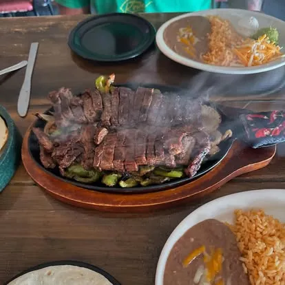
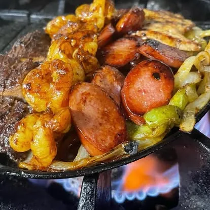
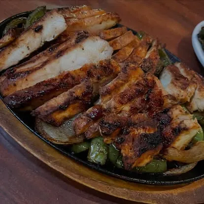

All dishes served with sides come with rice and beans. Any substitution of sides is a $1 upcharge per side. Sharing? No problem, a little setup fee helps us out.
Nothing on the menu matches that. Everything is made to order, so call (405) 387-3221 and ask.
Appetizers
Queso Blanco
sm. $3med. $5lg. $7Our original white queso
Salsa Especial
sm. $4med. $6lg. $8Warm salsa, chopped fried jalapeño, onion, tomato, diced avocado
Guacamole
sm. $4med. $6lg. $8Avocado, green onion, tomato made fresh daily
Queso con Carne
sm. $4med. $7lg. $9White queso with ground beef, tomato and cilantro garnish
Loaded Queso
$10White queso, ground beef, pico, cilantro, guacamole, sour cream
Botana
$10Sliced avocados, tomatoes, and fried potatoes with jalapeños and onions
Elotes Dip
$8Corn, mayo, cream cheese, chili powder, with crumbled cotija cheese
Mexi Dip Trio
$9Beans, guacamole, queso. Served in crispy bowls on a bed of thin chips
Queso Fundido
$10Chorizo, oaxaca cheese, poblanos. Served in a skillet
Asada Fries
$12Hand cut fries, steak, pico, cilantro, sour cream, monterey, cotija and queso fresco crumble cheese
Lite Bites + Nachos
Dressing choice: ranch, spicy ranch, balsamic vinaigrette, italian
Bean + Cheese
half $8full $10Bean, cheese, and jalapeños served on thick chips
Messy Nachos
$14Choice of meat, queso, lettuce, cheese, tomato, jalapeños, guacamole, and sour cream served on a bed of thin chips
Deluxe Nachos
half $11full $15Choice of meat, beans, cheese, guacamole, sour cream with reg. or swt. jalapeños served on thick chips
Tostadas
$14Two tostadas topped with beans, chili con carne, choice of meat, lettuce, cheese, tomato
Taco Salad
$14Crispy flour tortilla bowl filled with beans, rice, choice of meat, lettuce, cheese, tomato, green onion, and sour cream
Fajita Wrap
$13Choice of chicken or steak, bacon, pepper jack cheese, green leaf, iceberg lettuce, red onion, tomato, avocado, and spicy ranch
Fajita Salad
$16Choice of chicken or steak, served on a bed of green leaf, spring mix, and iceberg lettuce. Topped with bacon, cheese, red onion, tomato, avocado
Taco Dinners
Served with beans and rice.
Al Pastor
$15Marinated pork or chicken grilled with pineapple served on corn tortillas with cilantro and onion
Barbacoa
$16Authentically made shredded beef served on corn tortillas with cilantro and onion
Carnitas
$16Flavorful shredded pork served on corn tortillas with cilantro and onion
Carne Asada
$16Sauteed fajita steak, served on corn tortillas with cilantro and onion
Street Tacos
$16Sauteed fajita steak, served on flour tortillas, spread of guacamole with cilantro and onion
Quesabirria
$16Savory shredded beef, served on corn tortillas dipped in a red guajillo sauce folded over with monterey cheese, cilantro and onion
Puffy Tacos
$15Two lightly fried flour tortillas, filled with choice of meat, lettuce, cheese, green onion, and tomato
Taco Dinner
$14Crispy or soft tortillas, filled with ground beef, lettuce, cheese, tomato
Enchilada Dinners
Served with beans and rice.
Cheese
$13Two cheese and onion, on corn tortillas topped with chili con carne
Combo
$13.50One cheese enchilada, one beef enchilada, on corn tortillas with onions and chili con carne
Beef
$14Two beef, cheese, onion on corn tortillas topped with chili con carne
Shredded
$14Two cheese and onion, with either shredded beef, chicken, or pork and choice of sauce
Fajita Chicken
$15Two chicken and cheese on flour tortillas topped sour cream sauce
Fajita Steak
$15Two steak, cheese, and onion on corn tortillas topped with chili con carne and queso
Avocado
$14Two avocado, cheese, and onion on corn tortillas topped with sour cream sauce
Spinach
$14Two spinach, cheese, and onion on flour tortillas topped with sour cream sauce
Southside
$14Two cheese and onion on corn tortillas topped with rojo or verde sauce, lettuce, tomato, and queso fresco
3 Amigos
$15One cheese enchilada, topped with queso. One beef enchilada, topped with chili con carne. One fajita chicken enchilada, topped with sour cream
Mexican Flag
$16One shredded pork enchilada topped with verde sauce, one shredded chicken enchilada topped sour cream sauce and one beef enchilada topped with rojo sauce
Mexican Plates
Served with beans and rice.
Taco + Enchilada
$14One crispy beef taco, one beef enchilada topped with chili con carne
Burrito Dinner
$15Your meat, beans, rice, cheese, grilled bell pepper, onion and choice of sauce
Tamales
$15Choice of two shredded chicken, pork, or jalapeño & cheese with choice of sauce
Quesadilla Dinner
$14Choice of meat, cheese, grilled bell pepper, and onion
Jalapeño & Onion Dilla
$15Choice of meat, cheese, fried jalapeños and onions
Big Spin Dilla
$15Fajita chicken, bacon, spinach, and cheese
Chimichanga
$15Flour tortilla, stuffed with cheese, choice of meat, grilled bell peppers, onion, fried to perfection and choice of sauce
OG Flautas
$16Choice of meat rolled in corn tortillas, stuffed with cheese, fried until crispy. Topped with salsa verde, sour cream sauce, lettuce, tomato, cilantro, onion, avocado, and queso fresco crumble
New Style Flautas
$16Choice of meat rolled in corn tortillas, stuffed with cheese, fried until crispy. Served in a cup, layered with salsa verde, sour cream sauce, mixed cabbage, cilantro, onion, and queso fresco crumble
Burritos + Tortas
Grilled Cali
$16Flour tortilla, steak, monterey cheese, fries, pico, guacamole, sour cream sauce. Rolled up, toasted and served with fries
Grilled Cuban
$16Flour tortilla, garlic buttered toast, shredded pork, ham, swiss cheese, red onion, tomato, pickles, mustard, fried jalapeño and habanero. Rolled up, toasted and served with fries
Pork Guisado
$16Either rojo or verde guiso, rice, cilantro, onion and choice of sauce served with beans and rice
Sancho Burrito
$16Choice of meat, beans, rice, cilantro, onion, lettuce, tomato, cheese, sour cream and choice of sauce served with beans and rice
The Loco Burrito
$20Chicken, steak, shrimp, beans, rice, cheese, grilled bell peppers and onions. Covered half in chili con carne and the other in verde sauce topped with sour cream and guacamole served with beans and rice
Loco Burrito challenge: finish the plate in new record time and your meal is free.
Asada Torta
$15Steak, monterey jack cheese, cilantro, onion, sliced avocado. Served with fries
Birria Torta
$16Shredded beef, monterey jack cheese, cilantro, onions, fried jalapeños. Toasted in a red guajillo sauce. Served with beans and rice
Seafood
Shrimp Enchiladas
$15Two grilled shrimp, cheese, and onion on corn tortillas topped with sour cream sauce served with beans and rice
Ala Diabla
$17Cod, shrimp, jalapeño, onion, and garlic simmered to perfection served with beans and rice
Ceviche Tostadas
$17Shrimp, jalapeño, tomato, red onion, cilantro, avocado, and seasoning sauces served with beans and rice
Mexi Shrimp Cocktail
$15Boiled shrimp, jalapeño, red onion, cilantro, avocado, in a house cocktail mix served with saltine crackers
Baja Tacos
$16Beer-battered fish or shrimp, on corn tortillas with a spread of guacamole, finished with pico, red cabbage and chipotle drizzle served with beans and rice
Fish Tacos
$15Crispy or grilled cod, on corn tortillas topped with lettuce, tomato, cheese, onion, cilantro, and avocado sauce served with beans and rice
Shrimp Tacos
$16Crispy or grilled shrimp, on corn tortillas topped with lettuce, tomato, cheese, onion, cilantro and avocado sauce served with beans and rice
Fish or Shrimp Burrito
$16Choice of protein either crispy or grilled, black beans, rice, cilantro, onion, avocado sauce, rolled up, toasted and served with fries
Specialty
Alambre
$17Steak, bacon, chorizo sauteed with jalapeño, poblano, red bell and onions. Topped with monterey jack served with beans and rice
Chicken Verde
$16Chicken, poblano, onion, red bell, cooked in a verde sauce served with beans and potatoes
Poblano Skillet
$16Chicken, cheese, poblano, onion, tomato sauteed and mixed together served with beans and potatoes
Ricky's Platter
$17Chicken or steak, fried jalapeño, onion, tomato topped with sliced avocado served with beans and rice
Chile Relleno
$15Authentically battered, pan fried, stuffed with cheese and topped with ranchero sauce served with beans and rice
Fajita Melt
$15Chicken or steak, fried jalapeños, onions, and potatoes covered in cheese and all melted together
Empanadas
$16Tinga chicken, lettuce, tomato, queso fresco crumble and drizzled with sour cream sauce. Served with beans and rice
Guiso
$15Slow cooked tender pork in either a rojo or verde sauce. Served with tortillas, beans and rice
Fajitas
All fajitas come served with guacamole, sour cream, shredded cheese, beans, rice and corn or flour tortillas.



Best known for our fajitas: a dine-in and catering favorite.
Chicken
Single $20Double $38Marinated chicken breast, bell pepper, onion
Steak
Single $22Double $42Inside skirt steak, bell pepper, onion
Shrimp
Single $22Double $42Butterfly jumbo shrimp, bell pepper, onion
Sausage
Single $19Double $36Skinless smoked sausage, bell pepper, onion
Veggie
Single $18Double $35Bell pepper, onion, zucchini squash, broccoli, mushroom, and Brussels sprouts
Combo
Single $22Double $42Choice of two meats, bell pepper, onion
Triple Meat
Single $24Double $44Combo of three meats, bell pepper, onion
Four Meat
Single $25Double $45Can't decide, better to just go with all four.
Kids Menu (10 & under)
Every kids plate is $8.
Cheese Nachos
$8Chips and cheese only
Taco
$8Crispy or soft, beef, lettuce, tomato, and cheese
Enchilada
$8Cheese, beef, or chicken
Burrito
$8Bean, beef, or chicken
Quesadilla
$8Cheese, beef, or chicken
Nuggets
$8Served with fries
Corn Dog
$8Served with fries
Grilled Cheese
$8Served with fries
Burger
$8Served with fries
Steak Fingers
$8Served with fries
Sides
Mexi Cream Corn
$4Mexi Fried Potatoes
$4Mexi Rojo Potatoes
$4Fried Jalapeños & Onions
$4Freshly Grilled Veggies
$5Borracho Beans
$4Black Beans
$4Refried Beans
$4Mexican Rice
$4Reg. or Swt. Jalapeños
$3
To-Go Setups
Salsa & Chips
sm. $5med. $7lg. $9Queso & Chips
sm. $6med. $8lg. $10Spicy Verde
sm. $6med. $7lg. $10Salsa Especial
sm. $6med. $8lg. $10Relish
sm. $2med. $5lg. $7Chips
med. $3lg. $5Tortillas
half dozen $2dozen $4
Drinks
Beverages
Coke · Diet Coke · Vanilla Coke · Coke Zero · Sprite · Rootbeer · Diet Dr. Pepper · Dr. Pepper · Powerade · Lemonade · Sweet Tea · Unsweet Tea
Cerveza
Domestic: Michelob Ultra · Coors Light · Miller Lite · Budweiser · Bud Light · Yuengling
Import: Tecate · Modelo or Negra Modelo · Dos Equis Amber or Lager · Sol · Corona Extra or Premier · Pacifico · Victoria
Make it sloppy! Served with a goblet from the sub-zero freezer with a salted lime rim for $6.
What regulars say
“The fajitas are our favorite though. Let’s talk about the these chips. The thick ones. Dang. You can’t get any better.”
“…the Puffy Tacos are the best meal choice in central Oklahoma.”
“Excellent service from this family owned and operated restaurant.”
Catering
Weddings, birthdays, company parties, or take-home meals. We can do it all! Prices starting as low as $14 – $27 per person, self serve station or full service.
Hours & location
| Mon | Closed |
|---|---|
| Tue | Closed |
| Wed | 4:30 PM – 8 PM |
| Thu | 4:30 PM – 8 PM |
| Fri | 4 PM – 9 PM |
| Sat | 12 PM – 9 PM |
| Sun | Closed |
6815 E. Hwy 37
Tuttle, OK 73089
(405) 387-3221
mastrevino4@gmail.com